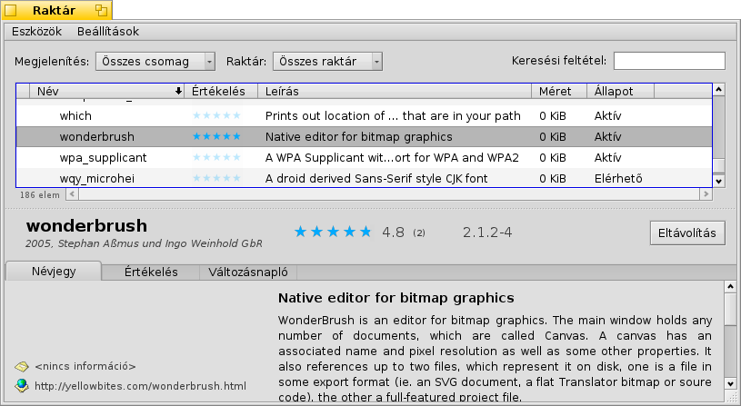

Magyar
Magyar Français
Français Deutsch
Deutsch Italiano
Italiano Русский
Русский Español
Español Svenska
Svenska 日本語
日本語 Українська
Українська 中文 ［中文］
中文 ［中文］ Português
Português Suomi
Suomi Slovenčina
Slovenčina Português (Brazil)
Português (Brazil) Català
Català English
English Raktár (HaikuDepot)
Raktár (HaikuDepot)
| Asztalsáv: | ||
| Útvonal: | /boot/system/apps/HaikuDepot | |
| Beállítások: | ~/config/settings/HaikuDepot/ |
A programok, csomagok kezelésére a Raktár használata az elsődleges megoldás. Segítségével válogathatunk a rendelkezésre álló csomagok közül, telepíthetjük, frissíthetjük illetve eltávolíthatjuk azokat.
A szűrő
Az ablak felső részében találunk több lehetőséget is a csomagok szűrésére:
A menüből különféle kategóriák közül választhatunk, mint például "Audió" vagy "Játékok". Továbbá megjeleníthetjük csak a telepített csomagokat illetve azokat, amikhez fissítés érhető el.
A menüből megadva csak az adott raktárban lévő csomagok jelennek meg,
A mezőben kulcsszavak beírásával.
A lista
Mint minden Nyomkövető ablakban, az oszlopfejlécen jobb egérgombbal kattintva itt is megadhatjuk, hogy melyik oszlop jelenjen meg. A bal gombbal kattintva pedig rendezhetjük a lista tartalmát, és persze az oszlopok sorrendje is módosítható azok mozgatásával.
A csomag állapota több féle is lehet:
: A csomag a raktárban jelen van és készen áll a letöltésre és a telepítésre. Ha bármely más csomag az előfeltétele a kiválasztott csomagnak, akkor a program informál minket azok letöltéséről/telepítéséről is.
: A csomag már telepítve van és használatra készen áll.
: A már telepített csomag egy újabb verziója érhető el.
A lista és az információs panel közötti pontozott vonalat függőlegesen mozgatva a lista méretét módosíthatjuk.
Információs panel
Az ablak alsó részében a kiválasztott csomagról kaphatunk információt.
A csomag neve mellett kapott helyet a fejlesztő személy/csoport, az értékelés és a verzió. Mindezek mellett pedig egy gomb, ami – a csomag állapotától függően – lehet , vagy .
Az alábbi három lehetőséget kapjuk:
A részletes információkkal szolgál a csomagról, például képernyőképpel és ha elérhető, akkor a csomagért felelős csoport/személy elérhetőségével.
Az panelen az felhasználók esetleges visszajelzéseit láthatjuk. A felhasználók megjegyzéseit is lehet értékelni a jobb oldalon található gombokkal.
A segítségével nyomon követhetjük a csomag eddigi változásait.
Eszközök és Beállítások
Az menüben találjuk a menüt. Ezzel lekérhetjük az összes elérhető csomagot a raktárakból.
A menüben találjuk a és a opciót. Általában az átlag felhasználónak nincs szüksége ezekre a csomagokra. Ugyanakkor fontosak lehetnek azoknak, akik ezekre a csomagokra alapozva fejlesztik a programjaikat.